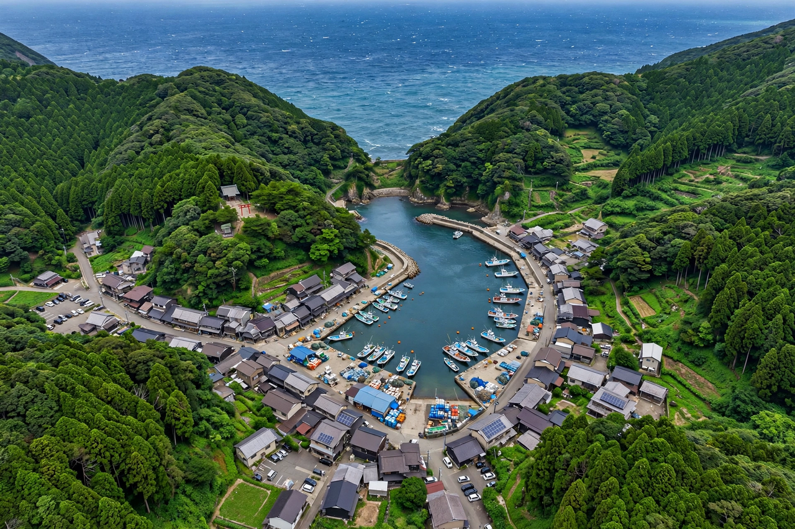

| Taiji 太地町 | |
|---|---|
| Country | Japan |
| Region | Kansai |
| Prefecture | Wakayama |
| District | Higashimuro |
| Area | 5.81 km² |
| Population | approx. 3,000 |
| Known for | Whaling; dolphin drive hunting |

Taiji (太地町, Taiji-chō) is a town located in Higashimuro District, Wakayama Prefecture, Japan. Situated on a small peninsula on the Kii Peninsula coast facing the Pacific Ocean, it is the smallest municipality in Wakayama by area. The town is internationally known for its long history of whaling and for its annual dolphin drive hunt, which became the subject of the 2009 Academy Award–winning documentary film The Cove.
Taiji occupies a rugged, forested headland surrounded on three sides by the sea. The town centre and harbour sit in a sheltered inlet, while the surrounding hills are covered in dense temperate rainforest typical of the Kii Mountain Range, a UNESCO World Heritage landscape. The climate is warm and humid, with heavy rainfall brought by the Kuroshio Current offshore.
Organised whaling in Taiji dates to the early 17th century, when Wada Yorimoto–era methods and later the net-whaling technique developed by the Wada and Taiji families made the town one of Japan's foremost whaling centres. Whales were processed for meat, oil and baleen, and the industry shaped the town's economy and identity for some three centuries. Hand-harpoon whaling continued into the modern era, and the Taiji Whale Museum, opened in 1969, preserves boats, harpoons and a small aquarium of marine animals.
From about September to March each year, Taiji's fishermen conduct drive hunts in which dolphins and small whales are herded into a cove; some animals are sold to aquariums and the rest are killed for meat. The practice has drawn sustained international criticism from animal-welfare groups and foreign governments, while the town and the Japanese government have defended it as a traditional livelihood and a matter of food culture. The hunt was brought to wide attention by the film The Cove (2009), which documented activists' efforts to film the cove.
The town is served by Taiji Station on the JR West Kisei Main Line, linking it to Wakayama and Nagoya, and by National Route 42 along the coast toward Shingū.